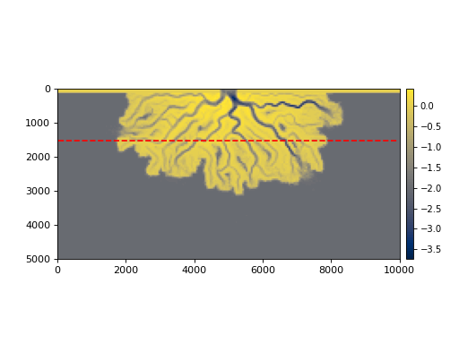

deltametrics.section.StrikeSection¶
-
class
deltametrics.section.StrikeSection(*args, y=None, x=None, **kwargs)¶ Strike section object.
Section oriented along the delta strike (i.e., perpendicular to an inlet channel). Specify the location of the strike section with :obj`y` and
xkeyword parameter options.Important
The y and x parameters must be specified as cell indices (not actual x and y coordinate values). This is a needed patch.
- Parameters
*args (
DataCubeor StratigraphyCube) – The Cube object to link for underlying data. This option should be ommitted if using theregister_sectionmethod of a Cube.y (
int, optional) – The y location of the section. This is the distance to locate the section from the domain edge with a channel inlet. Defaults to0if no value is given.x (
int, optional) – The x limits for the section. Defaults to the full domain width. Specify as a two-element tuple or list of int, giving the lower and upper bounds of x values to span the section.**kwargs – Keyword arguments are passed to BaseSection.__init__(). Supported options are name.
- Returns
section – StrikeSection object with specified parameters. The section is automatically connected to the underlying Cube data source if the
register_sectionmethod of a Cube is used to set up the section, or the Cube is passed as the first positional argument during instantiation.- Return type
Examples
To create a StrikeSection that is registered to a DataCube at specified y coordinate
=10, and spans the entire model domain:>>> rcm8cube = dm.sample_data.cube.rcm8() >>> rcm8cube.register_section('strike', dm.section.StrikeSection(y=10)) >>> >>> # show the location and the "velocity" variable >>> fig, ax = plt.subplots(2, 1, figsize=(8, 4)) >>> rcm8cube.show_plan('eta', t=-1, ax=ax[0], ticks=True) >>> rcm8cube.sections['strike'].show_trace('r--', ax=ax[0]) >>> rcm8cube.sections['strike'].show('velocity', ax=ax[1]) >>> plt.show()
Similarly, create a StrikeSection that is registered to a StratigraphyCube at specified y coordinate
=20, and spans only the left side of the model domain:>>> rcm8cube = dm.sample_data.cube.rcm8() >>> sc8cube = dm.cube.StratigraphyCube.from_DataCube(rcm8cube) >>> sc8cube.register_section('strike_half', dm.section.StrikeSection(y=20, x=[0, 120])) >>> >>> # show the location and the "velocity" variable >>> fig, ax = plt.subplots(2, 1, figsize=(8, 4)) >>> rcm8cube.show_plan('eta', t=-1, ax=ax[0], ticks=True) >>> sc8cube.sections['strike_half'].show_trace('r--', ax=ax[0]) >>> sc8cube.sections['strike_half'].show('velocity', ax=ax[1]) >>> plt.show()

-
__init__(*args, y=None, x=None, **kwargs)¶ Identify coordinates defining the section.
- Parameters
CubeInstance (
Cubesubclass instance, optional) – Connect to this cube. No connection is made if cube is not provided.
Notes
If no arguments are passed, an empty section not connected to any cube is returned. This cube will will need to be manually connected to have any functionality (via the
connect()method).
Methods
__init__(*args[, y, x])Identify coordinates defining the section.
connect(CubeInstance[, name])Connect this Section instance to a Cube instance.
show(SectionAttribute[, style, data, label, ax])Show the section.
show_trace(*args[, ax])Plot section trace (x-y plane path).
Attributes
nameAlong-section coordinate.
Section shape.
Stratigraphic attributes data object.
Coordinates of the section in the x-y plane.
List of variables.
Up-section (vertical) coordinate.
-
__getitem__(var)¶ Get a slice of the section.
Slicing the section instance creates a
SectionVariableinstance from data for variablevar.Note
We only support slicing by string.
- Parameters
var (
str) – Which variable to slice.- Returns
SectionVariable – SectionVariable instance for variable
var.- Return type
SectionVariableinstance
-
connect(CubeInstance, name=None)¶ Connect this Section instance to a Cube instance.
-
s¶ Along-section coordinate.
-
shape¶ Section shape.
Simply a tuple equivalent to
(len(z), len(s))
-
show(SectionAttribute, style='shaded', data=None, label=False, ax=None)¶ Show the section.
Method enumerates convenient routines for visualizing sections of data and stratigraphy. Includes support for multiple data style and mutuple data choices as well.
Note
The colors for style=’lines’ are determined from the left-end edge node, and colors for the style=’shaded’ mesh are determined from the lower-left-end edge node of the quad.
- Parameters
SectionAttribute (
str) – Which attribute to show.style (
str, optional) – What style to display the section with. Choices are ‘mesh’ or ‘line’.data (
str, optional) – Argument passed toget_display_arraysorget_display_lines. Supported options are ‘spacetime’, ‘preserved’, and ‘stratigraphy’. Default is to display full spacetime plot for section generated from a DataCube, and stratigraphy for a StratigraphyCube section.label (
bool, str, optional) – Display a label of the variable name on the plot. Default is False, display nothing. Iflabel=True, the label name from theVariableSetis used. Other arguments are attempted to coerce to str, and the literal is diplayed.ax (
Axesobject, optional) – A matplotlib Axes object to plot the section. Optional; if not provided, a call is made toplt.gca()to get the current (or create a new) Axes object.
Examples
Example 1: Display the velocity spacetime section of a DataCube.
>>> rcm8cube = dm.sample_data.cube.rcm8() >>> rcm8cube.register_section('demo', dm.section.StrikeSection(y=5)) >>> rcm8cube.sections['demo'].show('velocity')

Note that the last line above is functionally equivalent to
rcm8cube.show_section('demo', 'velocity').Example 2: Display a section, with “quick” stratigraphy, as the depth attribute, displaying several different section styles.
>>> rcm8cube = dm.sample_data.cube.rcm8() >>> rcm8cube.stratigraphy_from('eta') >>> rcm8cube.register_section('demo', dm.section.StrikeSection(y=5)) >>> fig, ax = plt.subplots(4, 1, sharex=True, figsize=(6, 9)) >>> rcm8cube.sections['demo'].show('depth', data='spacetime', ... ax=ax[0], label='spacetime') >>> rcm8cube.sections['demo'].show('depth', data='preserved', ... ax=ax[1], label='preserved') >>> rcm8cube.sections['demo'].show('depth', data='stratigraphy', ... ax=ax[2], label='quick stratigraphy') >>> rcm8cube.sections['demo'].show('depth', style='lines', data='stratigraphy', ... ax=ax[3], label='quick stratigraphy')

-
show_trace(*args, ax=None, **kwargs)¶ Plot section trace (x-y plane path).
Plot the section trace (
trace) onto an x-y planview.- Parameters
*args – Passed to matplotlib
plot().ax (
Axesobject, optional) – A matplotlib Axes object to plot the trace. Optional; if not provided, a call is made toplt.gca()to get the current (or create a new) Axes object.**kwargs – Passed to matplotlib
plot().
-
strat_attr¶ Stratigraphic attributes data object.
- Raises
NoStratigraphyError – If no stratigraphy information is found for the section.
-
trace¶ Coordinates of the section in the x-y plane.
-
variables¶ List of variables.
-
z¶ Up-section (vertical) coordinate.
{kind=link}
{kind=link}
{kind=link}
{kind=link}
{kind=link}
{kind=link}
{kind=link}
{kind=link}